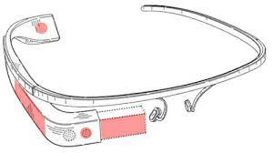

Câmera
Filme e fotografe a qualquer momento.
Ele também terá câmera de 5 MP capaz de gravar em HD 720p e um sistema de áudio de condução óssea. Sim, o áudio vai passar pelos seus ossos!

O Google Glass terá resolução de 640 x 360 pixels, o que a empresa diz ser equivalente a "uma tela de 25" de alta definição a 2,5 m de distância".
Ele também terá câmera de 5 MP capaz de gravar em HD 720p e um sistema de áudio de condução óssea. Sim, o áudio vai passar pelos seus ossos!
Memória flash de 16 GB (12 GB usáveis) e sincronização com Google Cloud estão inclusos no pacote. A bateria deve durar cerca de 1 dia de uso "normal", segundo a Google, mas funcionalidades como gravação de vídeo e Hangouts devem drenar a bateria mais rapidamente.
O Glass terá um conector micro USB, suporte a Wi-Fi 802.11 b/g e Bluetooth. Através de um app chamado MyGlass, os óculos serão capazes de se conectar com qualquer celular Android 4.0.3 ou superior, para habilitar o suporte a GPS e SMS.